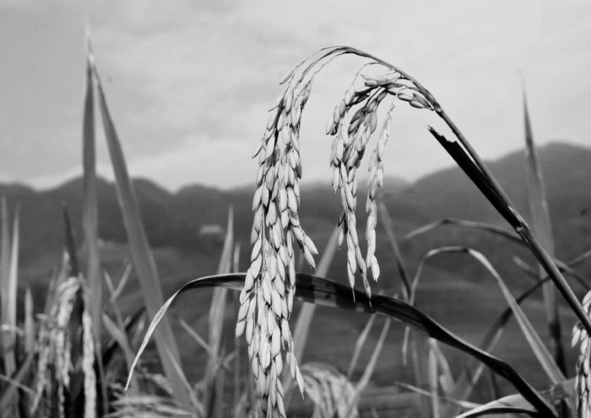
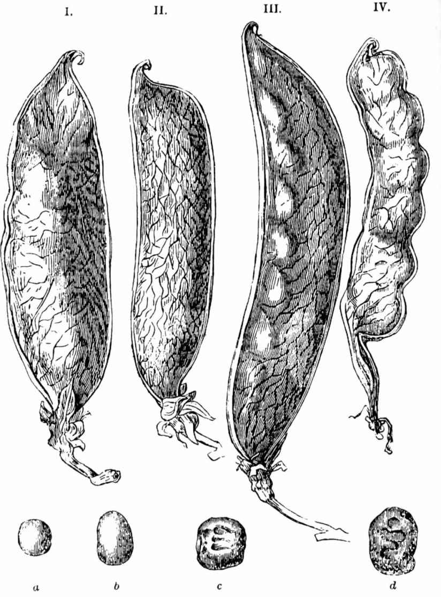

第九章
栽培植物：谷类和蔬菜
关于栽培植物的数目和系统的初步讨论——栽培的第一步——栽培植物的地理分布
谷类——关于物种数目的疑问——小麦的变种——个体的变异性——改变了的习性——选择——变种的古代历史——玉蜀黍的巨大变异——气候的直接作用
蔬菜——甘蓝在叶和茎上，而不是在其他部分上的变异——它的系统——芸薹属的其他物种——豌豆；几个变种主要在荚和种子上的差异量——某些变种是稳定的，某些变种是高度不稳定的——不杂交——大豆——马铃薯；繁多的变种——除去块茎外，差异很小——遗传的性状

水稻。
关于栽培植物的变异性，我将不像在家养动物的情形下那样地进行详细的讨论。这个题目含有很大困难之点。植物学者们通常把那些不值得他们注意的栽培品种忽略了。在若干情形下，野生的原型还未被知道或者模糊地被知道；在其他情形下，野化实生苗（escaped seedlings）同真正的野生植物也难以区分，所以在判断假定的变化量上就没有可靠的比较标准。不少的植物学者们都相信，若干古远栽培的植物已经发生了如此深刻的变异，以致现在不可能辨认出它们的原始祖先类型。同样叫人困惑的是如下的疑问：它们之中的一些究竟是来自一个物种，还是来自几个物种由于杂交和变异而完全混合在一起？变异常常同畸形相连续，而且彼此不能区分；不过畸形对本书的目的并没有多大的重要性。许多变异仅由接枝、接芽、压条、鳞茎等等而繁殖下来，它们的特点能由种子生殖中传递多少，则常常不知道。尽管如此，还能把一些有价值的事实聚集在一起；其他的事实此后也可以附带地谈到。以下两章的主要目的之一就在于说明我们的栽培植物有多少性状已经成为易于变异的了。
在进行详细讨论之前，先就栽培植物的起源先作些一般的叙述。得康多尔[1]关于这个问题有过可钦佩的讨论，在讨论中他显示了可惊的丰富知识，他把最有用的157种栽培植物列成一张表。他相信其中有85种在它们的野生状态下几乎肯定地已被知道，但是关于这一点，其他有才能的判断者[2]还抱有很大的怀疑。其中有40种，或是由于同野生状态下的最近似种类比较时表现了某种程度的差异，或是由于野生状态下的最近似种类可能不是真正的野生植物而只是从栽培里逃出的野化实生苗，所以得康多尔承认它们的起源是暧昧的。在全部157种中，得康多尔认为仅有32种的原始状态是十分不明的。但是应当知道，在那张表里他没有放进去若干性状不明确的植物，如南瓜、黍、高粱、四季豆、藊豆、番椒、蓝靛等的各种类型。他也没有把花卉植物放进去，而若干比较古远栽培的花卉植物，如某些蔷薇、皇家百合（imperial lily）、晚香玉乃至紫丁香，据说[3]还不知道它们的野生状态。
根据上述的比较数字，并且根据其他重要的论证，得康多尔得出结论说，很少见植物由于栽培而改变得如此之大，以致不能同它的野生原型视为同一的东西。但是，根据这个观点，鉴于未开化人以前大概不会选取稀有植物进行栽培，同时有用植物一般都是显眼的，它们过去不会是不毛之地或者最近才被发现的远隔诸岛上的植物，所以我觉得奇怪的是，怎么会有如此众多的栽培植物至今在野生状态下还未被知道或者只是模糊地被知道。相反地，如果说许多这等植物曾经由于栽培而发生了深刻的改变，这个难点就会迎刃而解。如果说它们在文明向前发展的期间被消灭了，这个难点也可以得到解决；但是得康多尔曾指出这种情形大概很少发生。一种植物一旦在任何地方被栽培之后，该地的居民就没有必要再在整个地区内去搜寻它，所以不会引起它的灭绝；甚至在饥荒年间如果发生了这种情形，一些休眠的种子大概还会被遗留在地上。洪堡（Humboldt）很久以前就曾说过，热带地方自然界的猛烈的繁茂力压倒了人类的微弱的劳力，在久已开化的温带地方，土地的整个表面已经发生了巨大变化，不容怀疑那里的一些植物已经灭绝了；尽管如此，得康多尔还指出，历史上最初在欧洲栽培的全部植物，在那里至今都还在野生状态下存在着。
罗兹列尔·德隆卡姆（M．M．Loiseleur-Deslongchamps）[4]和得康多尔都曾说过，我们的栽培植物，特别是谷类，原来一定以近乎现在的状态存在过；否则它们就不会作为食料而被注意和被珍视。但是这些作者显然没有考虑到一些旅行者就未开化人搜集恶劣食物的情形所写下来的许多记载。我曾读过一段关于澳洲未开化人的记载，他们在饥馑的年头用各种方法调煮许多种植物，以便把它们弄成无毒的和更富营养的。虎克博士曾看到，在锡金（Sikkim）的一个村庄里陷于半饥饿状态的居民把白星海芋的根部（arum-roots）[5]捣碎，然后让它们发酵几天，以便部分地去掉它们的毒性，他们吃了这些东西之后受到了巨大的损害；他还说，他们还调煮和吃食其他许多种有毒植物。安德鲁·史密斯爵士（Sir Andrew Smith）告诉我说，在南非大多数的果实、多汁的叶子，特别是根部，在食物缺乏的时候，都作为食用。那里的土人知道许多植物的性质，有一些植物在饥馑时被发现是能吃的，另外一些被发现是对健康有害的，甚至可以致死的。他曾遇到过被征服者组鲁人（Zulus）驱逐出来的一群巴奎那人（Baquanas），他们数年来都是以任何的根和叶为生，这些东西提供了仅少的营养并且填满了他们的胃囊，以便缓和饥饿的苦痛。他们好像是行走的骷髅，并且大大地感受便秘的疾苦。安德鲁·史密斯爵士还告诉我说，土人在这等时节就要观察野生动物、特别是狒狒和猴子吃些什么，以作为他们自己的张本。
根据各个地方未开化人在极端需要下所作的无数试验，并把他们的结果用口头相传下来，一些最不见得对人有用处的植物的营养性、刺激性和药用性大概最早被他们发现了。例如，居住在世界上三处远隔地区的未开化人，在无数的野生植物中发现了茶或“马得”（mattee）[6]的叶子、咖啡的果实都有刺激性和营养性（现在知道的它们的化学成分是同样的），最初看来这似乎是一个不可理解的事实。我们还知道苦于严重便秘的未开化人大概自然地会观察他们所吃的植物根部是否有泻剂的作用。在原始未开化状况下生存的人们，曾经经常被食物的严重缺乏所迫，不得不尝试几乎每一种可以嚼碎和咽下去的东西，我们在几乎所有植物的效用方面的知识大概都要归功于这些人。
根据我们所知道的世界许多地方的未开化人的习惯，我们没有理由去假定我们的谷类原来就同今天那样地对人类有价值。让我们只看看一个大陆——非洲的情况：巴茨（Barth）[7]说，非洲中部的大部分地方的奴隶定时地采集一种野草——狼尾草（Pennisetum distichum）的种子；他在另一地区看到妇女们用一种篮子在丰饶的草地上摇摆，以采集一种早熟禾（Poa）的种子。利威斯东在特特（Tete）附近看见过土人采集一种野草的种子；安得逊告诉我说，在更南的地方土人大量煮食一种草的种子，其大小有如金莲花的种子那样。他们还吃某些芦苇的根部，并且每个人都曾读过布什曼人（Bushmen）徘徊于田野之间用一种被火烧得坚固的棒子去掘取各种植物的根。关于在世界其他地方采集野草种子的情形，还可以举出一些类似的事实来[8]。
因为我们已经习惯于上等的蔬菜和甘美的果实，所以我们很难使自己相信野生的胡萝卜和美洲防风（parsnip）的线一般的根，或是野生石刁柏、野生西沙砂果、野生李的细小嫩茎等等会曾经被人珍视过；然而，根据我们所知道的澳洲未开化人和南非未开化人的习惯来看，我们不必怀疑这一点。瑞士人在石器时代就采集野生的西沙砂果、李、西洋李、蔷薇的果实、西洋接骨木的浆果、山毛榉的果实以及其他野生的浆果和果实[9]。杰美·布顿（Jemmy Button，在贝格尔号船上的一个火地人）告诉我说，火地的可怜的酸味黑色穗状醋栗在他尝起来是极甜的。
各地未开化的居民从许多艰苦的试验中找出了什么植物是有用的，或者通过各种不同的调煮手续使它们成为有用的，这样，他们不久就会在住所附近种植它们，这便在栽培中走了第一步。利威斯东[10]说，巴托卡（Batokas）未开化人常常把野生果树原样地留在他们的庭园里，有时甚至进行栽植，“而在其他土人中还没有看到过这样做的”。但是丢·夏鲁看到过他们栽植一株棕榈树和其他几种野生果树；而且他们把这些树视作私有财产。栽培中的第二步是种植有用植物的种子，这大概需要很少的一点远见；而且因为茅屋附近[11]的土地上常常会得到某种程度的肥料，改进的变种将会迟早出现。或者一种土著植物的野生而优良的变种吸引了某些未开化的聪明老人的注意；于是他们就会移植它，或者种植它的种子。有如爱沙·格雷（Asa Gray）[12]所举出的美洲的山楂、李、樱桃、葡萄、胡桃的物种那样。偶尔发现野生果树的优异变种的事情肯定会有的。道宁（Downing）还指出，某些北美胡桃的野生变种的果实比“普通物种的更大而且更具有优美的风味”。我之所以举出美洲果树，是因为在这个例子里我们不必为变种是不是从栽培中逃出的野化实生苗这一问题所烦扰。移植任何优异的变种，或者种植它的种子，并不意味着需要超过文明的幼稚初期所能有的那种远见。甚至澳洲野蛮人“也订有一条规约，即在任何能结种子的植物开花之后，不许把它们掘掉”；格雷爵士（Sir G．Gray）[13]说，这条规约显然是为了保存植物而订的，从来没有看到它被触犯过。我们在火地人的迷信中可以看到同样的精神，他们相信在水禽的幼龄时期把它们杀死，将会引起“大雨，大雪，大风”[14]。我还可以补充一点来表明最不开化的野蛮人的远见：火地人当发现一条搁浅在岸上的鲸鱼时，就会把它们的大部分埋在砂中，然后在反复袭来的饥馑期间，不辞长途跋涉，去取食那半腐败的残肉。
常常有人说[15]，我们没有一种有用植物原产于澳洲或好望角——这些是土著物种非常丰富的地方，或者原产于新西兰，或者原产于普拉他河以南的美洲；并且根据某些作者的意见，也没有一种有用植物原产于墨西哥以北的美洲。我不相信任何食用植物或贵重植物，除了加那利草（Canary-grass）[16]以外，是来自海洋岛或无人岛的。如果欧洲、亚洲、南美的近乎所有的有用植物从原始起就是以它们的现在状态存在的话，那么在上述那些大区域中完全缺少相似的有用植物，的确是一件令人惊奇的事。但是，如果这些植物曾经通过栽培而发生了如此巨大的改变和改进，以致不再密切类似任何自然的物种，那么我们就能理解上述各地为什么没有向我们提供有用植物，因为居住在那里人们没有开垦该处——如澳洲和好望角——的土地，或者没有完全开垦该处——如美洲的某些部分——的土地。这等地方的确生产对于未开化人有用的植物；虎克[17]博士仅于澳洲一地就举出了不下107个这等物种；但是这些植物没有被改进，结果就不能同那些在文明地方被栽培了和被改进了数千年之久的植物进行竞争。
我们虽然没有从新西兰这个美丽的岛上得到任何广泛栽培的植物，但是它的情形似乎还同上述的观点相反；因为在最初发现该岛时，那里的土人已栽培几种植物了；但是所有调查者根据土人的传说都相信，早期的波利尼西亚的（Polynesian）移民带来了种子、植物根以及狗，这些东西是在他们的长期航海中被聪明地保存下来的。波利尼西亚人常常在大洋上迷失方向，所以任何漂流的一群大概都会有这种程度的细心。因此，早期的新西兰的移民，同以后的欧洲的移民一样，对于土著植物的栽培大概不会有强烈要求的。按照得康多尔的意见，我们有33种有用植物来自墨西哥、秘鲁和智利；想到那些地方居民的文化状态，这并不足为奇。下列事实可以说明他们的文化状态：他们施行人工灌溉，他们不用铁器和火药就能造成通过坚硬岩石的隧道，而且就动物来说，他们（在下一章就要谈到）充分认识了重要的选择原理，因而在植物的场合里大概也会有此认识。我们有些植物来自巴西；早期的航海者魏司卜修斯（Vespucius）和卡勃列尔（Cabral）描述过这个国家，说它是一个人口稠密和广为耕种的地方。南美的土人种植“和我们的种类完全不同的”玉蜀黍、南瓜、葫芦、大豆和豌豆，而且他们还种植烟草；如果我们假定在我们的现有植物中没有一种是从这些北美类型传下来的，那么可以说这种假定是没有理由的。如果北美[18]同亚洲或欧洲一样，有长久的文化和稠密的人口，那里土著的葡萄、胡桃、桑、西洋砂果、李在长久的栽培过程中大概会产生大量的变种，其中有些是极端不同于它们的祖先的，而且野化实生苗在“新世界”，就如在“旧世界”一样，在物种的区别和系统[19]方面大概曾经引起了极大的混乱。
谷类 现在我要进行详细的讨论。在欧洲栽培的谷类有四属：小麦、黑麦、大麦、燕麦。近代第一流的学者[20]把小麦分成四个或五个，甚至七个不同的物种；黑麦有一个物种；大麦有三个物种；燕麦有两个、三个或四个物种。所以不同的作者把我们全部谷类分为10～15个物种。这些物种产生了大量的变种。有一个值得注意的事实：植物学者们对于任何一种谷类植物的原始祖先类型普遍抱有不一致的意见。例如，一位杰出的学者在1855年[21]写道：“我们可以毫不迟疑地相信，在谷类植物中没有一个是以它们现在的状态真正野生的，或者曾经野生过，所有都是今日在南欧或西亚大量生长着的物种的栽培变种；因为一切最可靠的事实证明了这一点。”另一方面，得康多尔[22]提出了大量的证据指出普通小麦（Triticum vulgare）在亚洲各处不同地方的野生情况，在这等地方普通小麦不像是从栽培中逃出来的野化植物。高德龙的意见是有一些力量的，他认为，如果假定这些植物是野化实生苗[23]，当它们自己在野生状态下繁育几代之后，还继续保持同栽培小麦的类似，那么这种情形大概就会使人们认为栽培小麦还保有原种的性状。但是大多数小麦变种在遗传上所表现的强烈倾向（这不久就要谈到的），在这里是被大大地低估了。喜尔特勃兰（Hildebrand）[24]教授的意见也很有价值，他说，如果栽培植物的种子或果实在作为散布手段方面具有不利的性质，那么我们几乎肯定地知道这些植物已不再保有它们的原种的状态了。相反地，得康多尔却极力主张：在澳洲领域内黑麦和一种燕麦显然处于野生状态下的情形，是屡屡发生的。除了这两个颇为暧昧的例子，并且除了他相信的有关两个小麦类型、一个大麦类型曾被发现真是野生的例子，得康多尔似乎并不充分满意所报告的有关其他谷类祖先类型的发现。按照巴克曼（Buckmann）[25]的材料，英国的一种野生燕麦（Avena fatua）如果受到几年的细心栽培和选择之后。就可以变得同两个很不同的栽培族差不多相等的类型。各种谷类植物的起源和物种差别的整个问题，是一个极困难的问题；但是当我们考察了小麦曾经经历过的变异量之后，我们或者可以进行比较好一点的判断。
梅兹加（Metzger）描述过小麦的七个物种，高德龙举出过五个物种，而得康多尔只举出过四个物种。除了在欧洲所知道的种类之外，大概不可能没有其他特性显著的类型存在于世界上更为遥远的地方；因为罗兹列尔·德隆卡姆说[26]，曾有三个新种或变种由中国的蒙古引进到欧洲，他认为这些都是那里的原生种。慕尔克罗夫特（Moorcroft）[27]也谈过拉达克（Ladakh）的哈梭拉小麦（Hasora wheat）是很特别的。有些植物学者相信至少有七个物种是作为小麦原种而存在过，如果他们是正确的话，那么小麦通过栽培，在任何重要性状上曾经经历过的变异量一定是微小的了；但是，如果仅有四个或更少的物种曾经作为原种而存在过的话，那么，所发生的变种显然具有非常显著的特征，以致有才能的判断者都要把它们看成是不同的物种。但是决定哪些类型应列入物种、哪些类型应列入变种是不可能的，所以就无法详细指出不同小麦种类之间的差异。一般说来，营养器官之间的差异是小的[28]；但是有些种类是紧密地和直立地生长着，而其他种类则是扩散地生长着，而且匍匐在地面上。藁杆在中空的多少上以及在性质上有差异。穗[29]的颜色和形状有差异，有的是四边形的，有的是扁平形的，有的是圆柱形的；小花在它们彼此密接上、在它们的茸毛上以及在长度的大小上都有差异。芒的有无是一个显著的差异，在某些禾本科植物中芒的有无甚至可以作为属的性状[30]。但是高德龙[31]曾指出，芒的存在在某些野草里是有变异的，特别是那些惯常同谷类作物混在一起生长的以及因此而被偶然栽培的一种雀麦（Bromus secalinus）和一种毒麦（Lolium temulentum）之类的野草，更加如此。谷粒在大小、重量、颜色上有差异；在一端的软毛多少上，在平滑或皱折上，在近乎球形、椭圆形或长形上，都有差异；最后，在内部组织上，即软的或硬的，甚至角质的，以及在所含麸素（gluten）的比例上也都有差异。
正如高德龙[32]所指出的，小麦的几乎一切族或物种都以完全平行的方式发生变异——种子的软毛的有无以及种子的颜色——小花的芒的有无等。那些相信所有种类的小麦都是来自一个野生种的人们，可能把这种平行的变异解释为由于相似体质的遗传而发生的，因而其结果就会有按照同样方式发生变异的倾向；而那些相信家系变化的一般学说的人们，可以把这一观点扩展到几个小麦种去，如果这等小麦种曾经在自然状态下存在过的话。
虽然小麦变种很少呈现显著的差异，但是小麦变种的数目是很多的。达尔勃瑞特（Dalbret）在三十年里栽培了150个至160个种类，除了谷粒的品质以外，它们都保持了纯度；考特尔上校拥有150个以上的变种，菲利普（Phillippar）拥有322个变种[33]。由于小麦是一年生的，所以我们可以知道许多性状上的微细差异多么确实地通过许多世代被遗传下来了。考特尔上校极力主张这同一事实。他在培育新变种的不屈不挠而有所成功的努力中发现：只有一个“安全的方法可以保证纯种的成长，即从一个谷粒或一个穗去培育它们，然后再贯彻一项计划——只播种最大生产力的产物，以便形成一个品系”。但是哈列特（Major Hallett）[34]又大大地向前跨进了一步，他对于由同一个穗的谷粒所生产出来的植株一代一代地进行连续选择，这样便形成了闻名于世界各地的他的“小麦（和其他谷类）之谱系”。同一变种的一些植株中的巨大变异量是另一个有趣之点，但是除了长久从事这种工作的人的眼睛，决不会发觉这一点的；因此考特尔上校[35]说，在他的一块麦田里（他认为这块地上的小麦同任何邻近的小麦在纯度上至少是一样的），拉·加斯卡（La Gasca）教授发现了20个种类；汉斯罗（Henslow）教授也观察到相似的事实。除了这等个体变异之外，那些特征充分显著到有价值而成为广泛栽培的类型常常是突然出现的；例如，希瑞夫（Shirreff）先生在他的一生中就幸运地培育出来了7个新变种，这些变种今日还在不列颠的许多地方被广泛地栽培着[36]。
同许多其他植物的情形一样，某些变种，无论是旧的或新的，在性状上远比其他一些变种更为稳定。考特尔上校怀疑他的某些新亚变种不是从杂交中产生出来的，所以不得不把它们作为不可矫正的产物而丢掉。另一方面，哈列特[37]曾指出，某些变种，虽然是古老的，虽然是被栽培在各个不同地方的，还具有多么可惊的稳定性。关于变异的倾向，梅兹加[38]根据他自己的经验举出过几个有趣的事实：他叙述过三个西班牙的亚变种，特别是其中有一个在西班牙已被知道是稳定的亚变种，在德国只能把它们的固有性状保持一个炎热的夏季；另一个变种只能在良好的土地上保持它的纯度，但是经过25年的栽培之后，它变得更加稳定了。他说，有其他两个亚变种，在最初是不稳定的，但是后来显然没有经过任何选择，而在它们的新环境中驯化了，并且保持了它们的固有性状。这等事实指出了，生活条件中多么小的一点变化就可以引起变异，并且进而指出了，一个变种是可以变得习惯于新生活条件的。人们最初都愿像罗兹列尔·德隆卡姆那样地断言，栽培在同一地区的小麦是处在显著一致的条件之下的；但是施肥有不同，同时这一块土地上的种子被播种在另一块土地上，而且远为重要的是，小麦是处在很少同其他植物进行斗争的环境之下的，这样它们就能在种种不同的条件下生存。自然状态下的各种植物是受到它们从周围其他植物所能夺取到的特殊地点和特定养分种类所限制的。
小麦取得新的生活习性是迅速的。林奈把夏种和冬种分为不同的物种；但是摩尼尔（M．Monnier）[39]曾经证明它们之间的差异仅是暂时的。他在春季播种冬性小麦，在100棵植株中，只有4棵产生了成熟的种子；反复播种这些种子，三年后所有植株被培育得都能结实了。相反地，在秋季播种夏性小麦，几乎所有的植株都被霜打死了；但是少数被保存了下来，而且产生了种子，三年以后这些夏性品种变成了冬性品种。因此以下的情形就不奇怪了：小麦很快地会在某种程度上变得驯化于各地的风土，而且从远地引进的种子播种在欧洲，最初，甚至在一个相当长的时期内[40]，其生长情况同欧洲品种有所不同。按照卡尔姆（Kalm）[41]的材料，加拿大的最早移民发现了那里的冬季对于他们从法国带去的冬性小麦过于寒冷，并且那里的夏季对于他们带去的夏性小麦也往往太短；直到他们得到欧洲北部的夏性小麦之前（能够充分成功地在那里生长），他们认为加拿大是不适于栽培谷类作物的。麸素的比率在不同气候下有很大的差异，这是众所周知的事情。谷粒的重量也会很快地为气候所影响，罗兹列尔·德隆卡姆[42]在巴黎附近播种过54个从法国南部和黑海地区引进的品种，其中52个品种所结的种子在重量上比其亲种大10％～40％。他把这些较重的种子又送回法国南部去种，结果它们立即产生了较轻的种子。
所有密切注意这个问题的人都主张，小麦的无数品种对于甚至同一地区的土壤和气候都具有密切的适应性，例如考特尔上校[43]说过：“由于各种品种适应于各种的土壤，农民在一定地区栽培某一品种才能够交上地租，而改种一个表面上较好的品种时则不能交纳地租。”这可能是一部分由于各个种类已经习惯于它的生活条件，如同梅兹加所指出的那样，确有这种情形发生；但这大概主要是由于各个品种之间的内在差异。
关于小麦品质的退化有过很多的记载：麦粉的品质、谷粒的大小、开花的时期以及硬度都可以由于气候和土壤的不同而有所改变，这似乎是几乎肯定的事情了；但是没有什么理由可以使我们相信，任何一个亚变种的整体曾经变成过另一个完全不同的亚变种。按照考特尔[44]的材料，发生的情形显然是这样：在一块田地上，常常会发现某一个亚变种比许多其他亚变种更为丰产，于是它就会逐渐代替最初被栽培的变种。
关于不同变种的自然杂交，证据是相互矛盾的，但是大部分否定杂交的经常发生。许多作者主张，受精是在闭合的花中发生的，但是根据我自己的观察，我可以肯定并不是这样的，至少我曾观察过的那些变种并不是这样的。因为我将在另一著作中讨论这个问题，故从略。
总之，所有作者都承认在小麦中曾有无数的变种发生过；但是，除非某些所谓物种被列为变种的时候，变种之间的差异并不重要。有些人相信小麦属的四个到七个野生种原来就以同现在几乎一样的状态存在过，他们的信念的根据，主要是小麦的若干类型[45]自从很古以来就存在的。我们最近从喜尔（Heer）[46]的可称赞的研究中得知一个重要的事实：甚至在那么早的新石器时代，瑞士的居民已经栽培了不下十种谷类作物，即五个种类的小麦，其中至少有四个种类通常可以被视作不同的物种，三个种类的大麦，一种稷，一种粟。如果可以示明，在农业的最早黎明期已经栽培了五个种类的小麦和三个种类的大麦，我们当然不得不把这些类型看做不同的物种。但是，正如喜尔所指出的，甚至在新石器时代，农业也已经有了相当的进步；因为，除了谷类以外，豌豆、罂粟、亚麻已被栽培了，而且显然也有苹果的栽培。从一个叫做埃及小麦的那个变种，从我们所知道的有关稷和粟的原产地的情形，以及从当时同作物混生在一起的野草的性质，我们也可以推论出湖上居民如果不是同南方民族依然保有商业的往来，那么他们就是南方民族迁移到这里去的。
罗兹列尔·德隆卡姆[47]曾经主张，如果我们的谷类植物是在栽培下大大地改变了，那么惯常同它们混生在一起的杂草大概也会发生同等改变的。但是这个论点表明选择原理是怎样完全地被忽视了。华生先生和爱沙·格雷教授的意见是，这等杂草没有变异过，至少在目前没有任何极度的变异，这是他们告诉我的；但是谁敢说杂草没有发生过像小麦的同一亚变种的诸个体植株所发生的那样多的变异呢？我们已经看到，栽培在同一块地上的小麦纯变种表现了细小的变异，这些变异可以被选择出来而加以个别繁育；并且偶然也会有更为强烈显著的变异出现，正如希瑞夫所证明的，这就很值得进行广泛的栽培了。除非我们对于杂草的变异性和选择给予同等的注意，那么认为它们在无意识的栽培下是不变的这种论点并没有任何价值。根据选择原理，我们可以理解为什么若干小麦栽培品种的营养器官的差异如此之小；因为，如果一个具有特殊形状的叶子的植株出现了，它不会受到重视，除非它的籽粒同时在品质和大小上都是优良的。在古代，哥留美拉和西尔苏斯（Celsus）就曾极力奖励[48]过对于种子进行选择，而且威吉尔（Virgil）曾经说道：“我曾看见过一些最大的种子，虽然是小心地注视着它们，如果没有勤劳的手每年拣选最大的种子，它们还会退化的。”
我们听到在古代已经多么勤勉地进行了选择工作（这是考特尔和哈列特所发现的），但是当时这种工作是不是有计划地进行了的，诚然还可以怀疑。选择原理虽然非常重要，然而人类经过数千年间的不断努力[49]，希图使作物产量和谷粒养分优于古埃及时代的情形，但在这方面所获得的效果很小，这似乎可以用来对于选择的效力进行有力的反对。不过我们必须不要忘记，在相继的各个时代里农业的状况和对土地施肥的数量是会决定生产力的最大限度的；因为，除非能够充分供给土地以必要的化学要素，栽培一个高产量的品种大概是不可能的。
现在我们知道，人类在非常古远的时期已经充分知道进行土地的耕作；所以很久以前小麦的改进大概已经达到在当时农业状态下所可能达到的优良标准了。有一小类事实支持着谷类的缓慢而逐渐改进的这一观点。在瑞士湖上住所的极古时代，人们还仅仅使用燧石器，那时极其广泛栽培的小麦已经是一个具有显著小的穗和谷粒的特殊种类了[50]，“近代类型的麦粒的断面是7～8毫米长，从湖上住所找到的大型麦粒的断面是6毫米长，7毫米长的很少见，而最小的只有4毫米长。这样，它的穗就远远比现今类型的穗为狭，而且小穗也更加水平地伸出”。关于大麦也是这样，极其广泛栽培的最古种类的穗是小的，而且谷粒比现今的谷粒“较小、较短、彼此较为接近；除去壳，长为2.5‘赖因’，宽不足1.5‘赖因’，而现在的谷粒，长达3‘赖因’，宽度几乎同长度相等”。[51]喜尔相信，这些小麦和大麦的小粒变种是某些现存的近似变种的祖先类型，这些现存的近似变种已经取其祖先的地位而代之了。
喜尔举出一项有趣的记载，说明了在瑞士的早期相继时代内相当广泛栽培的、一般同现存变种多少有所不同的若干植物的最初出现和最后消灭。上面已经说过，小穗和小粒的特殊小麦在石器时代已是最普通的种类了；它们一直延续到瑞士湖上住所时代和罗马时代，以后就灭绝了，第二个种类在起初是稀少的，以后就愈来愈多了。第三个种类，埃及圆锥小麦（T．turgidum），同任何现存的变种差异不大，而且在石器时代是稀少的。第四个种类二粒小麦（T．dicoccum）同一切小麦的既知变种都不同。第五个种类单粒小麦（T．monococcum）在石器时代只生一个穗。第六个种类（普通的斯俾尔达小麦T．spelta）直到青铜时代才在瑞士栽培。关于大麦，除了短穗和小粒的种类以外，还有其他两个种类的栽培，其中一个很稀少，而且类似今日的普通大麦（H．distichum）。在青铜时代黑麦和燕麦已被栽培；燕麦谷粒比现存变种的谷粒稍微小一些。在石器时代罂粟已有大量的栽培，这大概是为了榨油的缘故；但是当时的变种现在已经湮没无闻了。一种小粒的特殊豌豆从石器时代一直延续到青铜时代，此后就灭绝了；还有一种小粒的特殊大豆出现于青铜时代，一直延续到罗马时代。这些详述同古生物学者对于埋藏在地质构成的连续地层中的化石物种之最初出现、渐次稀少乃至最后灭绝或变化的叙述颇为一致。
最后，小麦、大麦、黑麦、燕麦的若干类型，究竟是从现在大部已不知道或已经绝灭的10个乃至15个物种传下来的呢，还是从可能曾经同我们现在的栽培类型密切类似的、或者曾经广泛不同到不能作为同一类的四个到八个物种传下来的呢，这就必须要每一个人自己去判断哪一种情形的可能性更大了。我们必须断言，在后一种情形中，人类在非常古远的时代已经栽培谷类，而且以前就进行了某种程度的选择工作。我们或者可以进一步相信，当小麦最初被栽培时，它的穗和谷粒一定会迅速增大，就像我们知道的野生胡萝卜和美洲防风的根部在栽培下迅速增大的情形一样。
玉蜀黍 植物学者们几乎一致认为所有栽培种类都是属于同一个物种。玉蜀黍的原产地无疑是在美洲[52]，从新英格兰到智利的美洲大陆上的土人都种植玉蜀黍。玉蜀黍的栽培一定是极古的，因为茨德（Tschudi）[53]叙述过两个种类，它们是从显然早于“印加”（Incas）王朝的坟墓中找到的，今天在秘鲁已经灭绝或者不被知道了。甚至还有比此更加有力的证据，我在秘鲁[54]海岸发现过一些玉蜀黍穗同18个近代海贝种一起被埋置在比海面至少高出85英尺的海滩中。从这种自古以来的栽培中，无数的美洲变种相应地发生了。到那时为止，并没有发现过在野生状态下的原始类型。据说在巴西有一个野生的固有种类[55]，它的谷粒不是裸露的，而是被一个11“赖因”长的壳包起来的，但是这种说法的证据并不充分。几乎可以肯定的是，原始类型的谷粒大概是由壳来保护的[56]，但是爱沙·格雷教授告诉我说，还有两篇发表过的文章也曾指出，巴西变种的种子所产生的后代有带壳的、也有不带壳的，那么一个野生种一开始被栽培就有这样迅速的和这样巨大程度的变异，是不可相信的。
玉蜀黍曾经发生过异常而显著的变异。特别注意这种植物栽培的梅兹加[57]把它们分类为具有无数亚变种的12个族，在亚变种中有的是相当稳定的，有的是十分不稳定的。不同的族在高度上有变异，从15～18英尺，一直到波拿法斯（Bonafous）所描述的矮生变种那样高的16～18英寸。整个穗部在形状上有变异，有的长而细，有的短而粗或者分枝。某一变种的穗比一个矮生种类的穗长四倍。穗上种子的排列从6行甚至到20行，或者排列得不规则。种子的颜色有白的，浅黄的，橙黄的，红的以及紫的，或者有漂亮的黑色条纹[58]；而且在一个穗上有时有两种颜色的种子。我在不多的采集品中就发现了某一个变种的一颗谷粒的重量几乎等于另一个变种的七颗谷粒的重量。种子的形状有巨大的变异，有的呈扁平形，有的近于球形，有的呈椭圆形；有的宽度大于长度，有的长度大于宽度；有的是平而无尖的，有的生有尖锐的齿状突起，而且这种齿状突起有时向后弯曲。某一个变种（波拿法斯的皱纹变种，在美国作为甜玉米被广泛栽培着）的种子有奇异的皱纹，使得整个穗表现了一种特别的外观。另一个变种（波拿法斯的聚散花状变种）的穗丛生在一起，所以叫做花束玉蜀黍（maïs à bouquet）。某些变种的种子含有多量的葡萄糖，而不是淀粉。雄花有时混生在雌花中间，司各脱（J．Scott）先生最近观察到一种更为罕见的情形：雌花生在一个真正的雄花的圆锥花序上，同时还有生两性花的[59]。亚莎拉[60]描述过一个巴拉圭的变种，它的谷粒很软，并且他说有几个变种适于用各种不同的方法来煮食。玉蜀黍的变种在成熟期方面也有巨大的差异，并且对于干旱和强风的抵抗力有所不同[61]。上述的某些差异在自然状态下的植物中会肯定被看做是具有物种的价值的。
雷伯爵（Le Comte Ré）说，所有他栽培过的变种的谷粒最终都是黄色的。但是，波拿法斯[62]发现他连续种了十年的变种大部分都纯粹地保持了固有的颜色；而且他还说，在庇里尼斯的山谷中和皮得蒙（Piedmont）的平原上有一种白玉蜀黍栽培了一个世纪以上，而它的颜色并没有任何改变。
在南方生长的，因而处于酷热之下的高生种类，其种子的成熟需要六到七个月；而在北方和较冷气候下生长的矮生种类，其种子的成熟只需要三到四个月[63]。皮特尔·卡尔姆[64]是特别注意这种植物的一个人，他说，在美国这种植物由南向北逐渐变小。把北纬37°的弗吉尼亚的种子播种在北纬43°～44°的新英格兰时，长出来的植株所结的种子不能成熟，或者极其困难地才能成熟。从新英格兰引进到北纬45°～47°的加拿大的种子也有同样的情形。如果一开始就给予很大的注意，南方种类经过几年栽培之后，其种子就能在北方完全成熟，这同夏性小麦变成冬性小麦或冬性小麦变成夏性小麦的情形是类似的。当高生种类同矮生种类种植在一起的时候，矮生种类在高生种类仅仅开放一朵花以前就已经盛花了；在潘西威尼亚（Pennsylvania），矮生玉蜀黍的种子比高生玉蜀黍的种子早成熟六个星期。梅兹加也说过，一种欧洲玉蜀黍的种子比另一个欧洲种类的种子早成熟四个星期。这些事实多么明显地阐明了风土驯化的遗传性，因此我们可以容易地相信卡尔姆所说的话：在北美，玉蜀黍或其他植物的栽培是一步一步向北方推进的。所有作者都一致承认，为了保持玉蜀黍变种的纯度，必须把它们分开种植，以免异花授粉。
欧洲气候对于美洲变种的作用是高度显著的。梅兹加曾从美洲的各种不同地方引进种子，把若干种类栽培在德国。我将举出在从美洲温暖地带引进来的一个高生种类（Zea altissima）的例子中所观察到的变化的大概情形[65]。第一年，它的株高达12英尺，只有少数种子成熟；穗上的下部种子纯粹地保持了固有的形状。但是上部种子有微小的变化。第二代，株高9～10英尺，种子成熟得比以前较好；种子外侧的沟洼几乎消失了，而且原有的鲜艳白色变暗了。某些种子的颜色甚至变成黄的了，并且在圆形上接近了普通的欧洲玉蜀黍。第三代，所有同原来的和很不相同的美洲亲类型的类似之点几乎都消失了。第六代，这种玉蜀黍同被描述为第五族的第二个亚变种的一个欧洲变种就完全类似了。当梅兹加发表他的著作的时候，这个变种还在海德堡（Heidelberg）附近被栽培着，只有根据它们的稍微旺盛一点的生长力，才能把它们同普通种类区别开。栽培另一个美洲族，也得到过近似的结果：白齿玉蜀黍（white-tooth corn）的齿状突起甚至在第二代就几乎消失了。第三个族，雏鸡玉蜀黍（chicken corn）没有那样大的变化，但是种子的光泽和透明度都减少了。在上述的例子中，种子是由温暖气候的地带引进到寒冷气候的地带中去的。但是弗瑞芝·缪勒（Fritz Müller）告诉我说，具有小而圆的种子的一个矮生变种（papa-gaien-mais）从德国引进到巴西南部以后，它们的植株变得同当地普通栽培种类的植株一样高，而且其种子也变得同当地普通栽培种类的种子一样扁平。
关于气候对于一种植物的直接而迅速的作用，以上的事实是我所知道的最显著事例。茎的高度、成长的时期、种子的成熟都会这样受到影响，这是可以预料到的；然而最奇怪的是，种子发生的变化是如此迅速而巨大。但是，种子是花的产物，花是由茎和叶的变态而形成的，所以茎和叶这等器官的任何变异，通过相关作用，大概都会容易地扩展到结实器官的。
甘蓝（Brassica oleracea） 每一个人都知道，不同种类的甘蓝在外观上表现了何等巨大的差异。在捷尔塞岛上，由于特殊的栽培方法和特殊的气候，它的茎高达16英尺，而且“喜鹊巢就搭在它的顶端的春季新梢上”；高达10～12英尺的木质茎干并不稀奇，并且在那里把它们作为椽子[66]和手杖来用。因此，我们想起，在某些地方，属于十字花科的一般草本性质的植物发展成乔木了。每一个人都能鉴别以下的差异：具有一个大叶球的绿色甘蓝和红色甘蓝；具有多数小叶球的抱子甘蓝（brussel-sprouts）；具有大多数发育不全的花朵的木立花椰菜（broccolis）和花椰菜（cauliflowers），它们大部分的花都不能产生种子，并且只有密集的伞房花序，而不是开放的圆锥花序；具有烫伤状叶子的绉叶甘蓝（savoys）；以及同野生亲类型极为接近的羽衣甘蓝（borecoles）和无头甘蓝（kaits）。还有种种不同的卷缩而条裂的种类，有些具有如此美丽的颜色，以致威尔摩林（Vilmorin）在他的1851年的目录中，列举了10个专作装饰用的变种。还有一些不很出名的种类，如“Pourtugues Couve Tronchuda”，它的叶脉非常肥大；芜菁甘蓝（choux-raves）的茎的地上部分长得像大洋芜菁那样大；并且最近形成的芜菁甘蓝的新族[67]，已经包含有九个亚变种，它们地下肥大部分同洋芜菁一样。
虽然我们在叶和茎的形状、大小、颜色、排列和生长方式上，以及在木立花椰菜和花椰菜的花茎的形状、大小、颜色、排列和生长方式上，看到这等巨大的差异，但值得注意的是，花的本身、种子荚和种子表现了极其轻微的差异，或者没有差异[68]。我比较过所有主要种类的花；Couve Tronchuda的花是白色的，比普通甘蓝的花些许小一点；朴茨茅斯木立花椰菜（Portsmouth broccoli）的花萼比普通的较狭，花瓣较小而稍短；而在其他甘蓝中还未能发觉任何差异。关于种子荚，只有紫色的芜菁甘蓝表现了差异，比普通的些许长一点和狭一点。我曾搜集过20个不同种类的种子，大多数都是无法区别的；如果有任何差异的话，也是极其微小的；例如，把各种木立花椰菜和花椰菜的种子聚集在一堆的时候，它们的颜色只是表现得些许红一点；早熟绿色乌尔姆羽衣甘蓝的种子比普通的稍小；勃瑞达无头甘蓝的种子比普通的稍大，但不大于威尔士海边的野生甘蓝的种子。如果我们一方面把各个种类甘蓝的叶和茎同它们的花、荚和种子比较一下，一方面我们把玉蜀黍变种以及小麦变种的相应部分比较一下，那么，在变异量方面所表现的对照是多么强烈呀！对于它们的解释是明显的；在谷物中只有种子是有价值的，而且所选择的是种子的变异；但是甘蓝的种子、种子荚以及花却被完全地忽视了。因为居尔特人（Celts）[69]已经栽培甘蓝，所以自从非常古远的时代以来，甘蓝的叶和茎的许多有用变异就受到注意并被保存下来了。
对于甘蓝的大批族、亚族、变种进行分类学的描述[70]是不必要的；但可以提一提林德雷（Lindley）博士关于以顶叶芽和侧芽为基础的分类法的主张[71]。（1）所有叶芽都是积极生长的和开放的，如野生甘蓝和无头甘蓝等。（2）所有叶芽都是积极生长的，但形成一些叶球，如抱子甘蓝等。（3）只有顶叶芽是积极生长的，形成一个叶球，如普通甘蓝、绉叶甘蓝等。（4）只有顶叶芽是积极生长的和开放的，大多数的花是发育不全的和肉质的，例如花椰菜和木立花椰菜。（5）所有叶芽那是积极生长的和开放的，大多数的花是发育不全的和肉质的，如抱子木立花椰菜（sprouting-broccoli）。最后这一个变种是新的，它同普通木立花椰菜的关系就像抱子甘蓝同普通甘蓝的关系一样，它是在普通花椰菜的苗床上突然出现的，而且忠实地遗传了它所新获得的显著性状。
甘蓝的主要种类至少早在16世纪就已经存在了[72]，所以构造上的无数变异的遗传已经经历了长久的时间。这是一个更加值得注意的事实，因为它说明了在阻止不同种类的杂交方面一定有过严密的注意。关于这一点，我举一个证明：我培育过233株的不同种类的实生苗，并且有目的地把它们种植得彼此很近，其中不下155株明显地退化了，而且变成了杂种；其余的78株也未能完全保持它们的纯度。许多固定的变种是否曾经在有意识的和偶然的杂交中形成的，尚可怀疑；因为这等杂交出来的植物被发现是很不稳定的。然而，有一个叫做贫农无头甘蓝（cottager's kail）的种类，是最近从普通无头甘蓝同抱子甘蓝进行杂交、再同紫色木立花椰菜进行杂交[73]而产生出来的，据说它是稳定的；但是我培育出来的植株并没有任何普通甘蓝种类所具有的那样近乎不变的性状。
如果小心地防止杂交，大部分种类虽然可以保持它们的纯度，但是苗床的检查还必须每年进行一次，而且一般会发现少数的实生苗是假的；甚至在这种场合里也表明了遗传的力量，因为梅兹加当谈到抱子甘蓝时说道[74]，变异一般是在“亚种”（unter art）或主要的族中出现的。但是，为了任何种类的纯粹繁育，那里的生活条件必须没有大的变化；例如，甘蓝在炎热的地方不会形成叶球，一个英国变种于一个极热而潮湿的秋季生长在巴黎附近，就发生了同样的情形[75]。非常瘠薄的土壤也可以影响某些变种的性状。
大多数作者相信一切甘蓝族都是从欧洲西部海岸的野生甘蓝传下来的；但是得康多尔[76]根据历史的和其他的理由有力地主张：更加可能的是，一般被列为不同物种的、目前仍在地中海生存的两三个密切近似类型是各个不同栽培种类的祖先，所有它们都混杂在一起了。就像我们在家养动物中所看到的情形一样，假定的甘蓝多种起源的说法，并不能解释栽培类型之间在性状上的差异。如果栽培甘蓝是三四个不同物种的后代，那么原来在它们之间可能存在的任何不育性可以说现在都完全消失了，因为，要不非常注意地防止杂交，没有一个变种能够保持它的独特性质的。
按照高德龙和梅兹加[77]所采用的观点，芸薹属的其他栽培类型是从两个物种——油菜（B．napus）和芜菁（B．rapa）传下来的；但是按照其他植物学者的意见，是从三个物种传下来的；另外的一些植物学者们则极力主张：所有这些类型——不论是野生的或栽培的，都应当被列在一个物种之内。油菜产生了两个大群，一是芜菁甘蓝（Swedish turnips，它的起源被认为是杂种）[78]，一是菜子菜（colzas），它的种子用作榨油。芜菁［科哈（Koch）］也产生了两个族：一是普通芜菁，一是榨油用的油菜。这后两种植物，虽然在外观上如此不同，但是属于同一物种，在这一点上有着非常明显的证据；因为科哈和高德龙观察到芜菁在未耕地里不生肥大的根；而且当油菜和芜菁被种在一起的时候，它们杂交得如此厉害，以致几乎没有一株是纯粹的[79]。梅兹加通过栽培把二年生的冬性油菜改变为一年生的夏性油菜——冬性油菜和夏性油菜是两个变种，但被某些作者认为是不同的物种[80]。
关于大的、肉质的、芜菁状的茎的产生，我们在一般被看做不同物种的三个类型中看到了类似的变异。但是，像茎和根的肉质肥大——作为植物自己将来用的养分贮藏——那样容易获得的变异简直可以说没有。在我们的萝卜、甜菜和一般较少知道的芜菁根芹菜（turnip-rooted celery），以及茴香（finocchio）、即普通茴香（fennel）的意大利变种中，可以看到上述一点。巴克曼先生最近根据他的有趣的试验证明了，能够多么迅速使野生美洲防风的根部肥大起来，这像威尔摩林以前在胡萝卜的场合中所证明的情形一样[81]。
栽培的胡萝卜同野生的英国胡萝卜，除了一般的繁茂生长以及根的大小和品质以外，简直没有任何性状上的差异；但是在根的颜色、形状和品质方面表现有差异的十个胡萝卜变种，在英国被栽培着，而且可以用种子进行纯粹的繁育[82]。因此，胡萝卜，同许多其他情形一样，例如同萝卜的无数变种和亚变种一样，好像只有人类所重视的那一部分发生了变异。真实的情形是，只有这一部分的变异被选择下来了；实生苗遗传到按照同样方式发生变异的倾向，相似的变异一次又一次地被选择下来，直到最后达到了大量的变化。
关于萝卜，卡瑞埃尔把野生萝卜（Raphanus raphanistrum）的种子播种在肥沃的土壤上，并且在几个世代中进行了连续的选择，他培育出许多变种，其根部同栽培萝卜（R．sativus）和奇异的中国变种鼠尾萝卜（R．caudatus）密切相似（参阅《实用农业杂志》，Journal d'Agriculture pratique，第一卷，1869年，第159页；以及一篇独立论文《栽培植物的起源》Origine des Plants Domestiques，1869年）。野生萝卜和栽培萝卜常常被列入不同的物种，而且因为它们的子实的差异，甚至被列入不同的属；但是霍夫曼教授现在指出，它们的子实的差异虽然是显著的，但是彼此逐级相互连续，鼠尾萝卜的子实就是中间性质的（《植物新报》，Bot．Zeitung，1872年，第482页）。霍夫曼栽培了几个世代的野生萝卜，也获得了一些结有同栽培萝卜的子实相似的植株。
豌豆（Pisum sativum） 大多数植物学者都把栽培豌豆和野生豌豆（P．arvense）看做不同的物种。后者野生于欧洲南部；但只有一个采集者在克里米亚发现过栽培豌豆的原始祖先[83]。费契牧师（A．Fitch）告诉我说，安德鲁·奈特用野生豌豆同一个著名的栽培品种——普鲁士豌豆进行杂交，这个杂交似乎是完全能育的。阿尔斐勒德博士（Dr．Alefeld）最近仔细地研究了这个属[84]，当他栽培了50个左右的变种之后，他断言它们肯定都属于同一物种。前面已经举出过一个有趣的事实：按照喜尔的材料[85]，在石器时代和青铜时代的瑞士湖上住所中找到的豌豆是属于一个灭绝变种的，这个变种的种子非常小，同野生豌豆的种子近似。普通栽培豌豆的变种是很多的，而且彼此都有相当的差异。我曾同时种植过41个英国的和法国的变种，以资比较。它们在高度上有差异，即从6英寸和8英寸一直到8英尺[86]，在生长方式上和成熟期上也有差异。有些只有两三英寸高，甚至在一般外貌上都有差异。普鲁士豌豆分枝很多。高生变种比矮生变种的叶子为大，但同它们的高度不成严格的比例：蒙摩茨矮生豌豆（Hairs Dwarf Monmouth）有很大的叶子，早熟矮生豌豆（Pois nain hatif）以及中等高的蓝色普鲁士豌豆（Blue Prussian）的叶子只有最高种类的叶子三分之二大。丹克劳夫特豌豆（Danecroft）的小叶稍小而尖；皇后矮生豌豆（Queen of Dwarfs）的叶子稍圆；英国皇后豌豆（Queen of England）的叶子宽而大。这三种豌豆的叶子形状稍有差异，其颜色也微有不同。大型甜豌豆（Pois géant sans parchemin）开紫色的花，幼小植株的小叶有红色的边缘；所有开紫花的豌豆，其托叶都有红色的痕迹。
在不同变种中，长在同一花梗上的有一朵花、两朵花或一小簇花；这种差异在某些荚果科植物（Leguminosæ）[87]中被看做具有物种的价值。在所有变种中，花除了颜色和大小以外，都彼此密切类似。它们的花一般是白色的，有时是紫色的，但是，甚至在同一个变种中花的颜色也不稳定。一个高生种类“瓦尔纳皇帝”的花几乎比早熟矮生豌豆的花大一倍；大叶的蒙摩茨矮生豌豆也有大的花。维多利亚大豌豆（Vietoria Marrow）的花萼是大的，而主教长荚豌豆（Bishop's Long Pod）的萼片就稍狭。在其他种类的花上，没有任何差异。
豌豆的荚和种子，在自然物种中具有非常一致的性状，在栽培变种中则有巨大的差异；荚和种子是有价值的，因而它们是被选择的部分。大型甜豌豆以它的薄荚皮而著名，当它们幼小的时候，可以连荚一齐煮食；但是按照高德龙先生的意见，这一群包含有11个变种，而它们的荚彼此差异极大；例如，路易斯黑荚豌豆（Lewis's Negropodded pea）的荚是笔直的、宽阔的、平滑的和暗紫色的，它的外皮不像其他种类的那样薄；另一个变种的荚非常弯曲；大型甜豌豆的荚顶非常尖；大荚豌豆（à grands cosses）这个变种的荚中豆粒可以透过外皮被人看见，特别是当干燥的时候更是如此；最初很难辨认它们是豌豆的荚。
在普通变种中，荚在大小方面有很大的差异。荚在颜色方面也有很大的差异，乌得弗德绿色大豌豆（Woodford's Green Marrow）的荚当干燥时是亮绿色的，而不是浅褐色的，紫荚豌豆正像它的名字所表示的那样。荚在平滑方面有很大的差异，丹克劳夫特豌豆的荚非常光滑，终局豌豆（Ne plue ultra）的荚则凸凹不平，荚在形状上有很大的差异，有的近乎圆柱形，有的宽而平。此外荚的顶端有的是尖形的，如塞尔斯东的信用（Thurston's Reliance），有的是非常截断形的，如“美洲矮生”（American Dwarf）。奥沃内豌豆（Auvergne pea）的荚的整个顶端是向上弯曲的。皇后矮生豌豆和弯刀豌豆（Scimitar pea）的荚几乎是半月形的。这里我把我栽培豌豆所产生的四种极其不同的荚图示如下。

图41 豆荚和豆粒
I．皇后矮生；II．美洲矮生；III．塞尔斯东的信用；IV．大形甜豌豆。
a．达恩·奥·罗克豌豆（Dan O'Rourk Pea）；b．皇后矮生；c．奈特高生白色大豌豆（Knight's Tall White Marrow）；d．路易斯黑荚豌豆。
豆粒本身表现有各种颜色，从几乎纯白色的，一直到褐色、黄色、浓绿色；甜豌豆的诸变种也表现有上述这些颜色，此外还表现有红色，通过鲜紫色一直到暗巧克力色。这些颜色有的分布得很均匀，有的表现为点、线或苔状斑块；在某些场合里，它是透过种皮的子叶颜色，在其他场合里，它就是豆粒本身的外皮的颜色。在不同变种中，按照高德龙先生的意见，豆荚包含有11个、12个一直到仅仅4个或5个豆粒。最大豆粒的直径几乎相当于最小豆粒的直径的一倍；而最矮生的种类并不永远结最小的豆粒。豆粒在形状上有很大的差异，有的是平滑而球形的，有的是平滑而长椭圆形的，有的是近乎阔椭圆形的，（如皇后矮生），有的是近乎立方形而折皱的（如许多大粒种类）。[88]
关于主要变种之间的差异的价值，如果开紫花的、在异常形状的薄皮豆荚中含有大而暗紫色豆粒的高生甜豌豆，野生在开白花的、具有灰绿色圆形叶子的、在弯刀形豆荚中含有成熟期不同的长椭圆形、平滑而浅色的豆粒的“皇后矮生”之旁，或者野生在具有大型叶子、尖形荚以及大型、绿色、褶皱、近乎立方形的豆粒的一个大型种类（如“英国锦镖”——Champion of England）之旁，那么毫无疑问，这三个种类会被分类为三个不同的物种的。
安德鲁·奈特曾经说过，豌豆变种由于不是虫媒的关系，颇能保持它们的纯度。关于保持纯度的事实，育成过若干新种类因而闻名于世的堪特尔巴利（Canterbury）的马斯特（Master）先生告诉我说，某些变种在一个相当长的期间内保持了稳定的状态，例如约在1820年育成的“奈特青色矮生”（Knight Blue Dwarf）[89]，就是如此。但是，大多数变种的存在期间都奇怪地短：例如，拉乌顿（Loudon）说[90]，“1821年被高度嘉许的种类，现在，1833年，已经在任何地方都找不到了”；我比较过1833年和1855年的目录，发现差不多所有的变种都改变了。马斯特先生告诉我说，土壤的性质可以使某些变种失去它们的性状。同其他植物的情形一样，某些变种能够纯粹地繁育，而其他一些变种则表现有决定的变异倾向；例如，马斯特先生在同一个荚内发现了两种不同形状的豆粒，一种是圆的，另一种是褶皱的，但是从折皱种类培育出来的植株总是表现了产生圆形豆粒的强烈倾向。马斯特先生还从另一个变种培育出来四个不同的亚变种，它们结有青而圆的、白而圆的、青而折皱的、白而折皱的豆粒；虽然他把这四个变种隔离地连续种了几年，但是每一个种类所产生的后代总是这四个种类混在一起的！
关于变种间不进行自然杂交这一点，我曾确定地说过，豌豆同其他一些荚果科植物不同，没有昆虫的帮助，完全能够孕育。我曾看见过当土蜂吸取花蜜的时候，把龙骨瓣压下，它身上沾的花粉如此之多，以致这些花粉不会不落在它访问的第二朵花的柱头上。尽管如此，紧密生长在一起的变种很少杂交；我有理由可以相信，这是因为它们的柱头在英国由自花的花粉而过早受精的缘故。这样，培育种用豌豆的园艺家们就能把不同的变种紧密地栽培在一起，而不致有不良的结果；我自己曾经发现，在这些条件下[91]，肯定可以把纯种至少保持几个世代。费契先生告诉我说，他曾栽培一个变种达20年之久，虽然它同其他一些变种紧密地生长在一起，但永远保持着它的纯度。根据四季豆（kidney-beans）的情形来类推，我想[92]处在这些条件之下的一些变种大概会偶尔杂交的；我将在第十一章里举出两个例子来说明这种情形是曾经发生过的，因为一个变种的花粉对于另一个变种的种子起了直接的作用（以后再进行说明）。许多不断出现的新变种是否由于这种偶然的和意外杂交，我不知道。我也不知道几乎所有的大批变种的短命究竟是仅仅由于时尚的变化，还是由于长期不断的自花受精而产生的衰弱体质。然而，值得注意的是，比大多数种类存在较久的安德鲁·奈特的若干变种是在18世纪末用人工杂交法育成的；它们当中的某些变种，我相信在1860年时还是兴盛的；但是现在，1865年，一位作者当谈到[93]奈特的四个大型豌豆种类时说道，它们已经获得了著名的历史，但它们的繁荣已经一去不复返了。
关于蚕豆（Faba vulgaris），我只稍微谈一谈。阿尔斐勒得博士曾经举出过[94]40个变种的简单性状。每一个看见过大豆采集品的人，一定会被蚕豆在形状、厚度、长同宽的比例、颜色和大小上所表现的巨大差异所打动。温德莎（Windsor）大豆同蚕豆（Horse-bean）的对照是多么显著！同豌豆的情形一样，我们的现存变种的先驱者是青铜时代瑞士[95]的一个结有很小子粒的、现已灭绝的特殊变种[96]。
马铃薯（Solanum tuberosum） 关于马铃薯的由来，很少疑问；因为栽培品种在一般外观上同野生种差异极小，而野生种在它的原产地一看就可以被辨识出来[97]。在不列颠栽培的变种是非常多的，例如罗逊（Lawson）[98]描述过175个种类。我曾在连接的行间栽植过18个种类；它们的茎和叶仅有些许的差异，但在某些场合里，同一变种的个体之间的差异就像不同变种之间的差异那样大。花的大小有差异，花的颜色从白到紫，此外，除了一个种类的萼片稍许长一点以外，在其他任何方面都没有差异。曾经被描述过的一个奇异变种总是开两类花，一类是重瓣而不稔的，一类是单瓣而能稔的[99]。果实或浆果也有差异，但程度微小[100]。变种对于卡拉瑞斗（Colorado）马铃薯甲虫的抵抗力很有差异[101]。
另一方面，块茎呈现了可惊的多样性。这一事实同所有栽培植物的有价值的和被选择的部分表现有最大变异量的原理是符合的。它们在大小和形状上有差异，有球形的、阔椭圆形的、扁平形的、肾形的或圆柱形的。一个秘鲁变种的块茎被描述[102]为笔直的，至少有六英寸长，虽然并不比人的手指为粗。幼芽在形状、位置、颜色上都有差异。块茎在所谓根部、即根状茎上的排列方式是不同的；例如，胡瓜状马铃薯（gurken-kartoffeln）的块茎形成一个倒金字塔形，而另一个变种的块茎则深深地埋入地中。根的本身或者接近地面，或者深入地中。块茎在平滑和颜色方面都有差异；它的外部颜色有白的、红的、紫的或者近乎黑的，它的内部颜色有白的、黄的或者近乎黑的。它们在味道和品质方面有差异，有的是烛质的，有的是粉质的；此外在成熟期方面，在贮藏力方面，也有差异。
许多植物是用鳞茎、块茎、插条等被长久繁育的，这样，同一个体在长久的期间内便处在了各式各样的条件之下，同这等植物的情形一样，实生马铃薯呈现了无数轻微的差异。在芽变那一章里我们将看到，若干变种，甚至用块茎来繁育时，也表现得非常不稳定。安得逊博士[103]种过爱尔兰紫色马铃薯的种子，它们同任何其他种类距离很远，所以至少在当代不会发生杂交，但是许多实生苗在每一个可能之点上都发生了变异，因而“没有两株是彼此完全相似的”。有些植株的地上部分彼此密切类似，但其块茎并不一样；有些块茎的外观几乎没有区别，但当煮食的时候，其品质则有广泛的差异。甚至在这种极端变异的情形下，原始祖先对于它们的后代也有一些影响，因为大多数的实生苗在某种程度上是同爱尔兰马铃薯亲本相类似的。肾形马铃薯一定可以被列入最高度栽培的和人工选择的族中；尽管如此，它们的特性还常常可以用种子得到严格的繁育。最高权威利威尔（Rivers）先生[104]说道，“梣叶状肾形马铃薯的实生苗同它们的亲本非常类似。卵形的肾形马铃薯的变种类似它们的祖先的情形更为显著，因为我在两季中进行了大量的密切观察，在块茎的早熟性、丰产性、或者大小、或者形状方面，没有看到一点差异”。
[1] 《理论植物地理学》（Géographie botanique raisonnée），1855年。
[2] 边沁先生对塔季奥尼-托则特（A．Targioni-Tozzetti）的评论，题为《有关栽培植物的历史的笔记》（Historical Notes on Cultivated Plant），见《园艺学报》，第九卷，1855年，第133页；又见《爱丁堡评论》（Edingburgh Review），1866年，第510页。
[3] 有关栽培植物的历史的笔记。
[4] 《关于谷类的考察》（Considérations sur les Céréales），1842年，第37页。《植物地理学》，1855年，第930页。“如果想象一下古代的农业，并且追溯到愚昧的时代，恐怕农民从最初起大概都要选择效果确实的种子”。
[5] 这个情况是虎克博士告诉我的。又见他的《喜马拉雅山纪行》（Himalayan Joumals），1854年，第二卷，第49页。
[6] 即Yerva Maté。——译者注
[7] 《非洲中部旅行记》（Travels in Central Africa），英译本，第一卷，第529页和第390页；第二卷，第29、265、270页。利威斯东的《旅行记》，第551页。
[8] 例如北美和南美的情形。埃得沃茨（Edgeworth）说（《林奈学会会报》，第四卷，1862年，第181页），在旁遮普（Punjab）的沙漠中，贫穷的妇女“用一个撢子扫集在草篮子里去的有四个草属的种子，即翦股颖属、黍属，狼尾草属、申契拉司草属（Cenchrus）”。
[9] 喜尔（Heer）教授，《湖上住居之植物》（Die Pflanzen der Pfahlbauten），1866年1月，“自然科学协会”出版。克瑞斯特（H．Christ），见卢特梅耶的《湖上住居动物志》，1861年，第445页。
[10] 《旅行记》，第535页。丢·夏鲁（Du Chaillu）：《赤道非洲探险记》（Adventures in Equatorial Africa），1861年，第445页。
[11] 在火地的以前土人小屋所在地，从老远就可望到那里的土著植物的鲜明绿色。
[12] 《美国科学院》（American Acad．of Arts and Sciences），1860年10月4日，第413页，道宁：《美国的果树》（The Fruits of America），1845年，第261页。
[13] 《澳洲探险杂志》（Journals of Expeditions in Australia），1841年，第二卷，第292页。
[14] 达尔文：《调查日志》，1845年，第215页。
[15] 得康多尔在他的《植物地理学》（第986页）中曾以最有趣的方式，把一些材料列成表。
[16] 即Phalaris canariensis。——译者注
[17] 《澳洲植物志》（Flora of Australia）的绪论，第110页。
[18] 关于加拿大，参阅卡泰尔（J．Cartier）的《航海记》（Voyage，1534年）；关于佛罗里达参阅那尔威兹（Narvaez）和得骚特（Ferdinand de Sotos）的《航海记》。因为我是在一般的“航海记”查出这些和其他的古代航海形形，所以我不详细指出页数。关于几个参考资料，请参阅爱沙·格雷，《美国科学杂志》（American Journal of Science），第二十四卷，十一月号，1857年，第441页。关于新西兰士人的传说，参阅克劳弗得的《马来语的文法和辞典》（Grammer and Dict．of the Malay Language），1852年，第260页。
[19] 例如，参阅赫维特或华生（C．Watson）关于我们的野生李、樱桃、西洋砂果的叙述：《不列颠的赛贝尔》（Cybele Britannia），第一卷，第330、334页等。凡蒙斯（Van Mons）在他的著作Arbres Fruitiers（1835年，第一卷，第444页）中宣称，他曾在野生实生苗中发现了所有我们的栽培品种的模式，但是跟着他把这些实生苗看成是物种的如此众多的原始祖先。
[20] 参阅得康多尔的《植物地理学》，1855年，第928页以次。高得龙：《物种》，1859年，第二卷，第70页；梅兹加：《谷物的种类》（Die Getreidearten）等，1841年。
[21] 边沁对托则特的评论，题为《有关栽培植物的历史的笔记》，见《园艺学报》，第九卷，1855年，第133页。他告诉我说，他至今还坚持同样的意见。
[22] 《植物地理学》，第928页。整个的问题以可称赞的知识被充分地讨论了。
[23] 高德龙：《物种》，第二卷，第72页。几年前，法布尔（M．Fabré）的优秀观察（虽然这是错误的）使许多人相信，小麦是阿季洛卜斯草（Ægilops）的改变了的后代；但是高德龙根据仔细的试验示明了（第一卷，第165页），这一群的第一阶段，即Ægilops triticoides，是小麦和Æ．ovata之间的杂种。这些杂种自然发生的频率，以及Æ．triticoides变成小麦的逐渐方式，还为高德龙的结论留下了一些疑问。
[24] 《植物的分布手段》（Die Verbreitungsmittel der Pflanzen），1873年，第129页。
[25] 《给英国科学协会的报告》（Report to British Association），1857年，第207页。
[26] 《关于谷物的考察》（Considérations sur les Céréales），1842—1843年，第29页。
[27] 《喜马拉雅地方旅行记》，1841年，第一卷，第224页。
[28] 考特尔上校（CoI．J．Le Couteur）：《小麦的变种》（Varieties of Wheat），第23、79页。
[29] 罗兹列尔·德隆卡姆：《关于谷类的考察》，第11页。
[30] 参阅《植物学学报》（Journ．of Botany），第八卷，第82页，注释，虎克的优秀评论。
[31] 《物种》，第二卷，第73页。
[32] 《物种》，第二卷，第75页。
[33] 关于达尔勃瑞特和菲利普，参阅罗兹列尔·德隆卡姆的《关于谷类的考察》，第45、70页。
[34] 参阅他的关于“小麦之谱系”的论文，1862年；在“英国科学协会”上宣读的论文，1869年；以及其他出版物。
[35] 《小麦的变种》，绪论，第6页。马歇尔在他的《约克郡的农村经济》（Rural Economy of Yorkshire）（第二卷，第9页）一书中说道：“在每一块玉蜀黍的地里，就如在一群牛里那样，有着同样多的变种。”
[36] 《艺园者记录和农业新报》（Agricultural Gazette），1862年，第963页。
[37] 《艺园者记录》，十二月号，1868年，第1199页。
[38] 《谷物的种类》，1841年，第66、91、92、116、117页。
[39] 高德龙：《物种》，第二卷，第74页。梅兹加（《谷物的种类》，第18页）说夏性大麦和春性大麦也有同样的情形。
[40] 罗兹列尔·德隆卡姆：《谷类》，第二部，第224页。考特尔的著作，第70页。还能举出其他的记载。
[41] 《北美旅行记》，1753—1761年，英译本，第三卷，第165页。
[42] 《谷类》，第二部，第179—183页。
[43] 《关于小麦的变种》，绪论，第7页。参阅马歇尔的《约克郡的农村经济》，第二卷，第9页。关于燕麦变种的适应性的同样情形，参阅《艺园者记录》和《农业新报》（1850年，第204、219页）中的一些有趣的文章。
[44] 《关于小麦的变种》，第59页。最高权威希瑞夫先生说道：“我从来没有看见过由于栽培而改进了的或退化了的一个谷粒可以把这种变异传给下一代。”（《艺园者记录和农业新报》，1862年，第963页）
[45] 得康多尔：《植物地理学》，第930页。
[46] 《湖上住居的植物》，1868年。
[47] 《谷种》，第94页。
[48] 考尔特在他的著作中的引文。
[49] 得康多尔：《植物地理学》，第932页。
[50] 喜尔：《湖上住居的植物》，1866年。这一节是克瑞斯特博士引自卢特梅耶尔博士的《湖上住居动物志》，1861年，第225页。
[51] 喜尔，沃哥特（Vogt）在《关于人类的讲话》（Lectures on Man）中引述，英译本，第355页。
[52] 参阅得康多尔在《植物地理学》（第942页）中的长篇讨论。关于新英格兰，参阅西利曼主编的《美国学报》（American Journal），第四十四卷，第99页。
[53] 《秘鲁旅行记》（Travels in Peru），英译本，第177页。
[54] 《南美的地质考察》（Geolog．Observat．on South America），1846年，第49页。
[55] 在波拿法斯（Bonafous）的巨著《玉蜀黍志》（Hist．Nat．du Mais，1836年，第五图）里，同时在《园艺学会学报》（Journal of Hort．Soc.，第一卷，1846年，第115页）里，载有这种玉蜀黍的图，并且记载了种植其种子的结果。一个印度人看见过这种玉米，并且告诉老圣伊莱尔说（参阅得康多尔：《植物地理学》，第951页），在他家乡的潮湿森林里它是野生的。得采玛契尔（Teschemacher）先生在《波士顿历史学会会报》（Proc．Boston Soc．Hist．，10月19日，1842年）里叙述了这种种子的种植。
[56] 摩坤·丹顿（Moquin-Tandon）：《畸形学原理》（Éléments de Tératologie），1841年，第126页。
[57] 《谷物的种类》，1841年，第208页。我曾按照波拿法斯的巨著《玉蜀黍志》（1836年）变更了梅兹加的少数叙述。
[58] 高德龙：《物种》，第二卷，第80页；得康多尔：同前书，第951页。
[59] 《爱丁堡植物学会会报》（Transact．Bot．Soc．of Edinburgh），第八卷，第60页。
[60] 《南美航海记》（Voyages dans l' Amérique Méridionale），第一卷，第147页。
[61] 波拿法斯：《玉蜀黍志》，第31页。
[62] 同前书，第31页。
[63] 梅兹加：《谷物的种类》，第206页。
[64] 卡尔姆：《玉蜀黍的描述》（载于《瑞典法令》，1752年，第四卷），我参考的是古英译本。
[65] 《谷物的种类》，第208页。
[66] 《甘蓝木材》，《艺园者记录》，1856年，第744页，引自虎克主编的《植物学学报》。由甘蓝茎干制成的一个手杖曾在邱园博物馆展览过。
[67] 法国皇家《园艺学会学报》（Journal de la Soc．Imp．d'Horticulture），1855年，第254页。引自《园艺植物志》，1855年。
[68] 高德龙：《物种》，第二卷，第5页；梅兹加：《栽培甘蓝的物种的分类学记载》（Syst．Beschreibung der Kult．Kohlarten），1833年，第6页。
[69] 列哥尼尔（Regnier）：《居尔特人的一般经济》（l' Économic Publique des Celts），1818年，第438页。
[70] 参阅《园艺学会会报》（第五卷）中老得康多尔的意见，以及梅兹加的《甘蓝的种类》等。
[71] 《艺园者记录》，1859年，第992页。
[72] 得康多尔：《植物地理学》，第842，989页。
[73] 《艺园者记录》，二月号，1858年，第128页。
[74] 《甘蓝的种类》，第22页。
[75] 高德龙：《物种》，第二卷，第54页；梅兹加：《甘蓝的种类》，第22页。
[76] 《植物地理学》，第840页。
[77] 高德龙：《物种》，第二卷，第54页；梅兹加：《甘蓝的种类》，第10页。
[78] 《艺园者记录和农业新报》，1856年，第729页。特别参阅同刊，1868年，第275页，作者说道：他把一个甘蓝变种（B．oleracea）种在芜菁旁边，并且从杂种实生苗中培育出真正的芜菁甘蓝。所以后者应当同甘蓝或芜菁分类在一起，而不应当分类在油菜之下。
[79] 《艺园者记录和农业新报》，1855年，第730页。
[80] 梅兹加：《甘蓝的种类》，第51页。
[81] 许多作者引用了威尔摩林的这些试验。卓越的植物学者德开斯内教授（Prof．Decaisne）根据他自己所得到的相反结果，最近对于这个问题表示了怀疑，但是相反的结果同正面的结果不能等价齐观。另一方面，卡瑞埃尔（M．Carriére）最近说道（《艺园者记录》，1865年，第1154页）：他把野生胡萝卜的种子种在距离任何栽培地都非常远的处所，而他的实生苗的根甚至在第一代就表现了差异，而成为纺锤状的，比野生胡萝卜的根较长、较软、较少纤维。他从这些实生苗中育成了几个不同的变种。
[82] 拉乌顿（Loudon）：《园艺百科辞典》（Encyclop．of Gardeaing），第835页。
[83] 得康多尔：《植物地理学》，第960页。边沁先生相信栽培豌豆和野生豌豆都属于同一物种（《园艺学报》，第九卷，1855年，第141页）；在这一点上，他同塔季奥尼（Targioni）的意见不同。
[84] 《植物新报》，1860年，第204页。
[85] 《湖上住居的植物》，1866年，第23页。
[86] 在《园艺学会会报》（第二部），第一卷（1835年），第374页，高德龙先生说过：有一个叫做“Rounciva”的变种达到这种高度，我从这篇论文里引用了一些事实。
[87] 又译作豆科。——译者注
[88] 《皇家学会会报》（Phil．Tract．），1799年，第196页。
[89] 《艺园者杂志》（Gardener's Magazine），第一卷，1826年，第153页。
[90] 《园艺百科辞典》，第823页。
[91] 安德逊博士在《巴斯学会农业论文集》（Bath Soc．Agricultural Papers，第四卷，第87页）里谈到同样的效果。
[92] 我在《艺园者记录》（1857年，10月25日）里发表过关于这个问题的详细试验记载。
[93] 《艺园者记录》，1865年，第387页。
[94] “Bonplandia”，第十卷，1862年，第348页。
[95] 喜尔：《湖上住居的植物》，1866年，第22页。
[96] 边沁先生告诉我说，在波都（Poitou）和法国的邻接地方普通菜豆（Phaseolus vulgaris）的变种非常多，它们彼此之间的差异如此之大，以致萨威（Savi）把它们描写成不同的物种。边沁先生相信所有都是从一个未知的东方种传下来的。虽然变种在形态和种子方面有很大的差异，但是“在叶和花的被忽视的性状上，特别是在小苞的一些不重要性状上——甚至植物学者的眼睛都看不出它们的重要性，却表现了显著的一致”。
[97] 达尔文：《调查日志》，1845年，第825页。萨巴恩（Sabine），《园艺学会会报》，第五卷，第249页。
[98] 威尔逊的《英国的农业》（British Farming）第317页中所引述的《苏格兰的蔬菜概观》（Synopsis of the Vegetable Products of Scottland）。
[99] 麦肯兹爵士（Sir G．Mackonzie），《艺园者记录》，1845年，第790页。
[100] 布夏和威尔塔（Putsche and Vertuch）：《关于马铃薯的一篇论文》（Versuch einer Monographie der Kartoffeln），1819年，第15页。再参阅安得逊：《农业的改造》（Recreations in Agriculturc），第四卷，第325页。
[101] 华尔许（Walsh）：《美国的昆虫学者》（The American Entomologist），1869年，第160页。再参阅安得逊博士：《农业的改造》，第四卷，第325页。
[102] 《艺园者记录》，1862年，第1052页。
[103] 《巴斯学会农业论文集》，第五卷，第127页。《农业的改造》，第五卷，第86页。
[104] 《艺园者记录》，1863年，第643页。